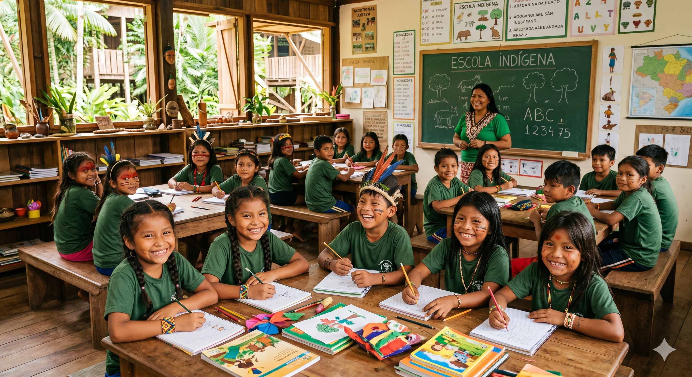

"Dados sem pessoas que os compreendam são apenas ruído. Educação é o que transforma dado em poder."
O Educa Data nasceu do compromisso da Xingu Data com as comunidades que vivem ao redor do nosso data center. Não basta construir tecnologia de ponta — é preciso garantir que as pessoas próximas também se beneficiem dela.
Nossa escola comunitária atende crianças, jovens e adultos dos arredores do Alto Solimões, com ensino presencial e digital integrado, conectividade de qualidade e professores capacitados.

Pilares do Programa
Como o Educa Data
funciona.
Escola Comunitária
Estrutura física construída próxima à sede do Xingu Data, com salas de aula, laboratório de informática e biblioteca digital, acessível a todos os moradores da região.
Inclusão Digital
Acesso à internet de alta velocidade, dispositivos e aulas de letramento digital para crianças e adultos. Sem conexão, não há transformação — por isso garantimos o acesso antes de qualquer conteúdo.
Capacitação Técnica
Cursos profissionalizantes em TI, manutenção de redes, programação básica e suporte técnico — com certificação reconhecida e conexão direta com o mercado de trabalho local e remoto.
Programas
O que oferecemos
à comunidade.
Escola de Base Digital
Ensino fundamental e médio com currículo integrado à tecnologia. Crianças aprendem matemática, português e ciências usando ferramentas digitais, preparando-se para o mundo moderno sem abandonar sua identidade cultural.
Jovens em Tecnologia
Programa para jovens de 14 a 24 anos com foco em programação, design digital, suporte em TI e gestão de dados. Os melhores alunos têm oportunidade de ingresso na equipe do próprio Xingu Data.
Alfabetização Digital para Adultos
Cursos noturnos e de fim de semana para adultos aprenderem a usar smartphones, computadores, internet e serviços digitais do governo. Autonomia digital é autonomia de vida.
Biblioteca Digital Comunitária
Acervo digital com milhares de livros, videoaulas e materiais educativos disponíveis gratuitamente para toda a comunidade — online e offline, para quem não tem conexão constante em casa.
Junte-se à causa